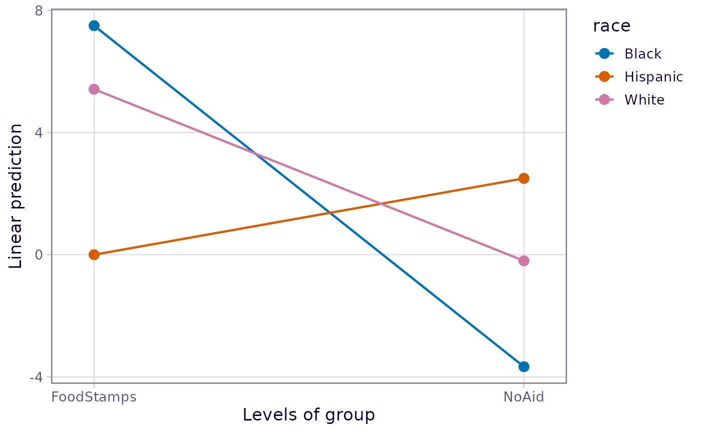

This observational dataset involves three factors, but where several factor combinations are missing. It is used as a case study in Milliken and Johnson, Chapter 17, p.202. (You may also find it in the second edition, p.278.)
Format
A data frame with 107 observations and 4 variables:
agea factor with levels
1,2,3,4. Mother's age group.groupa factor with levels
FoodStamps,NoAid. Whether or not the family receives food stamp assistance.racea factor with levels
Black,Hispanic,White. Mother's race.gaina numeric vector (the response variable). Gain score (posttest minus pretest) on knowledge of nutrition.
Source
Milliken, G. A. and Johnson, D. E. (1984) Analysis of Messy Data – Volume I: Designed Experiments. Van Nostrand, ISBN 0-534-02713-7.
Details
A survey was conducted by home economists “to study how much lower-socioeconomic-level mothers knew about nutrition and to judge the effect of a training program designed to increase their knowledge of nutrition.” This is a messy dataset with several empty cells.
Examples
nutr.aov <- aov(gain ~ (group + age + race)^2, data = nutrition)
# Summarize predictions for age group 3
nutr.emm <- emmeans(nutr.aov, ~ race * group, at = list(age="3"))
emmip(nutr.emm, race ~ group)

# Hispanics seem exceptional; but this doesn't test out due to very sparse data
pairs(nutr.emm, by = "group")
#> group = FoodStamps:
#> contrast estimate SE df t.ratio p.value
#> Black - Hispanic 7.50 5.97 92 1.255 0.4241
#> Black - White 2.08 2.84 92 0.733 0.7447
#> Hispanic - White -5.42 5.43 92 -0.998 0.5799
#>
#> group = NoAid:
#> contrast estimate SE df t.ratio p.value
#> Black - Hispanic -6.17 4.36 92 -1.413 0.3383
#> Black - White -3.47 2.49 92 -1.394 0.3484
#> Hispanic - White 2.70 3.96 92 0.681 0.7750
#>
#> P value adjustment: tukey method for comparing a family of 3 estimates
pairs(nutr.emm, by = "race")
#> race = Black:
#> contrast estimate SE df t.ratio p.value
#> FoodStamps - NoAid 11.17 3.45 92 3.237 0.0017
#>
#> race = Hispanic:
#> contrast estimate SE df t.ratio p.value
#> FoodStamps - NoAid -2.50 6.55 92 -0.382 0.7034
#>
#> race = White:
#> contrast estimate SE df t.ratio p.value
#> FoodStamps - NoAid 5.62 1.53 92 3.666 0.0004
#>